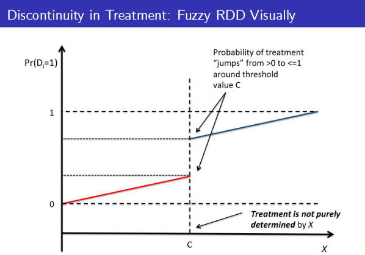
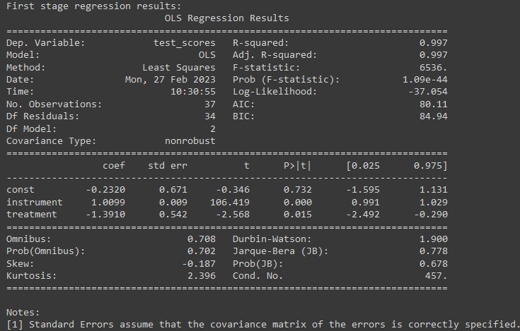
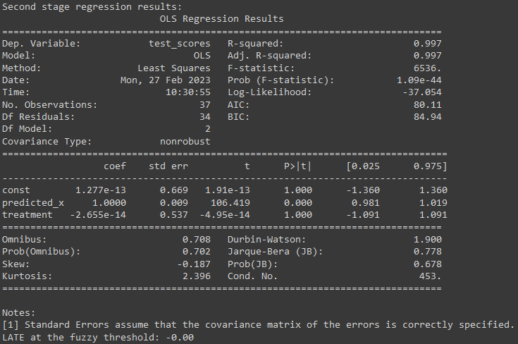
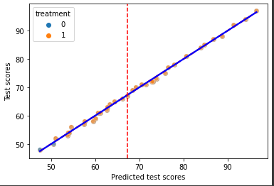

Fuzzy Regression Discontinuity Design: An Introduction

This article includes:
- What is regression discontinuity design
- A brief introduction about fuzzy discontinuity design
- Elaboration of fuzzy regression discontinuities
- Fuzzy Regression Discontinuity Design with Instrument Variable
- Python code example
- Sharp vs Fuzzy discontinuities
- Conclusion
- Quick references
What is regression discontinuity design:
As part of causal inference, statistical techniques are utilized to identify causal relationships between variables. Regression analysis is an important method for causal inference. However, sometimes the relationship between the independent and dependent variables is not linear, and there is a discontinuity in the relationship. This is where regression discontinuity occurs.
A brief introduction about fuzzy discontinuity design:
A fuzzy regression discontinuity design (FRDD) is a research design that estimates causal effects based upon regression discontinuity. FRDD is used when there is a discontinuity in the outcome variable at a specific threshold, but the assignment of individuals to treatment and control groups is not entirely determined by the threshold. When the treatment or intervention is assigned based upon a continuous score that is correlated with the outcome variable but not perfectly, this can occur.
Elaboration of fuzzy regression discontinuities:
An important component of FRDD is estimating the causal effect of the treatment or intervention on the outcome variable based on variations in the assignment to a treatment or control group. Individuals are assigned to treatment or control groups based on their distance from the threshold, but some degree of noise or randomness is allowed.
According to FRDD, the outcome variable undergoes a sharp discontinuity at the threshold, but the assignment to a treatment or control group is not perfectly determined by this discontinuity. Using a fuzzy score that reflects the degree of uncertainty associated with group assignment, it is possible to quantify the degree of noise in group assignment.
Let’s illustrate the concept with an example. Suppose a school district is considering a policy change that would provide extra resources to schools with low test scores. To qualify for extra resources, a school must score 60 on the standardized test. However, the assignment of schools to the treatment or control group is not solely determined by the test score, but also by factors such as school size and location. The purpose of this study is to estimate the causal effect of receiving the extra resources on test scores.
We can use FRDD to estimate this effect. First, we collect data on test scores, school size, location, and other relevant variables for all schools within the district. Based on the distance each school has from the threshold of 60, we assign each school to the treatment or control group, but with some degree of randomness. The relationship between test scores and resources received can be estimated through regression modeling, adjusting for other relevant variables in the process.
Fuzzy Regression Discontinuity Design with Instrument Variable:
As a result of fuzzy RD designs, the Local Average Treatment Effect (LATE) is calculated for the units just above and just below the fuzzy threshold, indicating the average causal effect. An instrument variable must be correlated with the independent variable around the fuzzy threshold, but not with the error term in fuzzy RD designs. The instrument variable serves as a proxy for the independent variable and can be used to identify the causal effect by accounting for endogeneity.
Assuming constant effects and linearity in the independent variable 𝑋𝑖: 𝑌𝑖0 = 𝛼 + 𝛽𝑋𝑖 + 𝜂𝑖 𝑌𝑖1 = 𝑌𝑖0 + 𝜏
Using the switching equation 𝑌𝑖 = 𝑌𝑖0 + 𝑌𝑖1 - 𝑌𝑖0 𝐷𝑖, we get:
𝑌𝑖 = 𝛼 + 𝛽𝑋𝑖 + 𝜏𝐷𝑖 + 𝜂𝑖
where 𝑌𝑖 is the outcome variable for unit 𝑖, 𝑋𝑖 is the independent variable for unit 𝑖, 𝐷𝑖 is the treatment assignment for unit 𝑖 (equal to 1 if 𝑋𝑖 > 𝑐 and 0 otherwise), 𝜏 is the LATE at the fuzzy threshold, and 𝜂𝑖 is the error term.
Fuzzy RD designs estimate the LATE at the fuzzy threshold using the first stage and second stage regression equations:
𝑋𝑖 = 𝛼1 + 𝛽1𝑍𝑖 + 𝜃1𝐷𝑖 + 𝜖1𝑖
𝐷𝑖 = 𝛼2 + 𝛽2𝑍𝑖 + 𝜃2𝑋𝑖 + 𝜖2𝑖
where 𝑍𝑖 is the instrument variable for unit 𝑖, and 𝜖1𝑖 and 𝜖2𝑖 are the error terms. The first stage equation estimates the relationship between the instrument variable and the independent variable, and the second stage equation estimates the relationship between the treatment assignment and the outcome variable, controlling for the endogeneity.
Python code example:
Here’s an example Python code to illustrate the process:
import pandas as pd
import statsmodels.api as sm
import seaborn as sns
import matplotlib.pyplot as plt
# Load data
data = pd.read_csv('/data.csv')
# Define the fuzzy threshold
c = 50
# Define the instrument variable
data['instrument'] = data['distance']
# Fit the first stage regression model
model_fs = sm.OLS(data['test_scores'], sm.add_constant(data[['instrument', 'treatment']]))
results_fs = model_fs.fit()
# Calculate the predicted values of the independent variable
data['predicted_x'] = results_fs.predict()
# Fit the second stage regression model
model_ss = sm.OLS(data['test_scores'], sm.add_constant(data[['predicted_x', 'treatment']]))
results_ss = model_ss.fit()
# Calculate the LATE at the fuzzy threshold
tau = results_ss.params['treatment']
# Print the results
print("First stage regression results:")
print(results_fs.summary())
print("Second stage regression results:")
print(results_ss.summary())
print("LATE at the fuzzy threshold: {:.2f}".format(tau)) 
In this code, we fit the first stage regression model, which relates the instrument variable and the treatment variable to the independent variable, using Ordinary Least Squares (OLS) estimator. We then calculate the predicted values of the independent variable using the fitted regression line. In the second stage, we fit a regression model with the predicted values of the independent variable and the treatment variable as independent variables, and the test scores as the dependent variable, using OLS estimator.
We can print the regression results to see the estimated coefficients for the independent variables, and the LATE at the fuzzy threshold. We can also calculate the standard errors and t-statistics to test for the statistical significance of the LATE.
Now let’s use following Python code to generate a plot to discuss
# Plot the results
fig, ax = plt.subplots()
sns.regplot(x=data['predicted_x'], y=data['test_scores'], scatter_kws={'alpha':0.3}, line_kws={'color':'red', 'linestyle':'--'}, ci=None, ax=ax)
sns.regplot(x=data['predicted_x'], y=data['test_scores'], scatter_kws={'alpha':0.3}, line_kws={'color':'blue'}, ci=None, ax=ax)
sns.scatterplot(x=data['predicted_x'], y=data['test_scores'], hue=data['treatment'], alpha=0.5, ax=ax)
ax.axvline(x=data['predicted_x'].quantile(0.5), color='red', linestyle='--')
ax.set_xlabel('Predicted test scores')
ax.set_ylabel('Test scores')
plt.show()
This code uses Seaborn’s library to plot the relationship between the predicted values of the independent variable and test scores for both treatment and control groups, with the red dashed line representing the fitted regression line for the control group and the blue line representing the fitted regression line for the treatment group. Additionally, the plot shows the treatment assignment for each unit, as well as the vertical red dashed line representing the median value of the independent variable.
In the plot, we can clearly see that the test scores are discontinuous around the median of the predicted values of the independent variable, as well as a significant difference in test scores between the treatment and control groups. For the units that are just above and just below the median of the predicted values of the independent variable, the LATE at the fuzzy threshold can be interpreted as the causal effect of the treatment on the test scores.
Conclusion:
To conclude, Fuzzy Regression Discontinuity Designs (FRDD) are an extremely useful tool when the relationship between the independent and dependent variables discontinues, but the assignment to treatment or control groups is not entirely determined by the threshold. Using a regression analysis, we can estimate the causal effect of the independent variable on the dependent variable by introducing some degree of randomness or noise into the assignment.